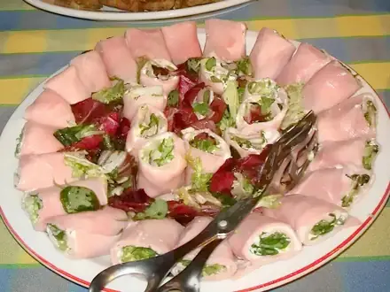
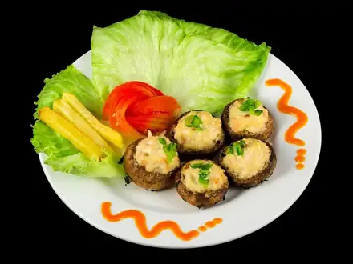
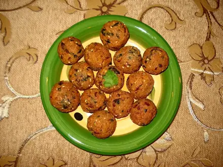
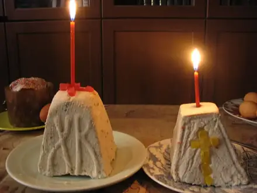
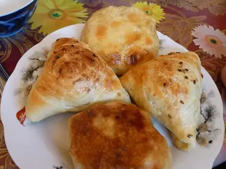
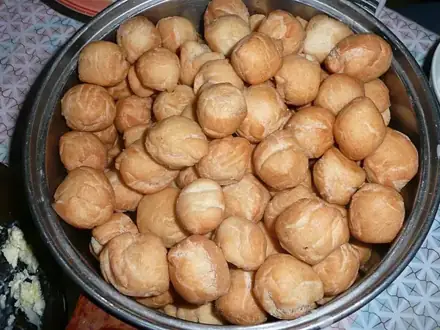
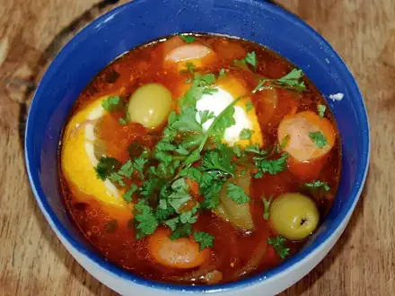
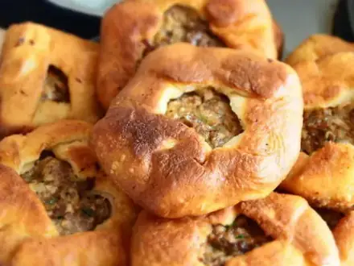

Блюда на праздничный стол
Салаты, закуски и горячее для гостей. 61 рецептов: у каждого время, калории и БЖУ на порцию, пошаговые инструкции и список покупок
- Лаваш-ролл с сыром и зеленью15 мин · 332 ккал · Б 13 г · Закуска
 Морковь по-корейски20 мин · 136 ккал · Б 1 г · Салат
Морковь по-корейски20 мин · 136 ккал · Б 1 г · Салат
Рулетики из ветчины с сыром и чесноком20 мин · 283 ккал · Б 14 г · Закуска Форшмак из сельди25 мин · 234 ккал · Б 13 г · Закуска
Форшмак из сельди25 мин · 234 ккал · Б 13 г · Закуска- Мини-пиццы на лаваше25 мин · 375 ккал · Б 20 г · Закуска
- Бутерброды-ёжики (канапе)30 мин · 299 ккал · Б 13 г · Закуска
 Крабовый салат35 мин · 345 ккал · Б 12 г · Салат
Крабовый салат35 мин · 345 ккал · Б 12 г · Салат Пицца на сковороде из готового теста35 мин · 624 ккал · Б 25 г · Выпечка
Пицца на сковороде из готового теста35 мин · 624 ккал · Б 25 г · Выпечка Буррито с курицей35 мин · 649 ккал · Б 42 г · Второе блюдо
Буррито с курицей35 мин · 649 ккал · Б 42 г · Второе блюдо Куриные наггетсы в духовке35 мин · 348 ккал · Б 40 г · Второе блюдо
Куриные наггетсы в духовке35 мин · 348 ккал · Б 40 г · Второе блюдо
Фаршированные шампиньоны в духовке40 мин · 192 ккал · Б 13 г · Закуска Цезарь с курицей40 мин · 626 ккал · Б 45 г · Салат
Цезарь с курицей40 мин · 626 ккал · Б 45 г · Салат
Фалафель40 мин · 445 ккал · Б 13 г · Второе блюдо
Творожная пасха без выпечки40 мин · 349 ккал · Б 18 г · Десерт Блины на молоке45 мин · 379 ккал · Б 12 г · Завтрак
Блины на молоке45 мин · 379 ккал · Б 12 г · Завтрак Пхали из шпината45 мин · 198 ккал · Б 8 г · Закуска
Пхали из шпината45 мин · 198 ккал · Б 8 г · Закуска Картофель дольками в духовке50 мин · 290 ккал · Б 5 г · Гарнир
Картофель дольками в духовке50 мин · 290 ккал · Б 5 г · Гарнир Хачапури по-имеретински на сковороде50 мин · 800 ккал · Б 36 г · Выпечка
Хачапури по-имеретински на сковороде50 мин · 800 ккал · Б 36 г · Выпечка Куриные рулетики с сыром50 мин · 321 ккал · Б 44 г · Второе блюдо
Куриные рулетики с сыром50 мин · 321 ккал · Б 44 г · Второе блюдо Шарлотка с яблоками60 мин · 251 ккал · Б 6 г · Выпечка
Шарлотка с яблоками60 мин · 251 ккал · Б 6 г · Выпечка Оливье60 мин · 494 ккал · Б 16 г · Салат
Оливье60 мин · 494 ккал · Б 16 г · Салат
Самса из слоёного теста60 мин · 478 ккал · Б 17 г · Выпечка Домашние роллы с огурцом и тунцом60 мин · 384 ккал · Б 21 г · Закуска
Домашние роллы с огурцом и тунцом60 мин · 384 ккал · Б 21 г · Закуска Киш лорен60 мин · 631 ккал · Б 23 г · Выпечка
Киш лорен60 мин · 631 ккал · Б 23 г · Выпечка Салат Мимоза с сардинами60 мин · 455 ккал · Б 21 г · Салат
Салат Мимоза с сардинами60 мин · 455 ккал · Б 21 г · Салат Мясо по-французски60 мин · 615 ккал · Б 31 г · Второе блюдо
Мясо по-французски60 мин · 615 ккал · Б 31 г · Второе блюдо Чахохбили из курицы70 мин · 768 ккал · Б 56 г · Второе блюдо
Чахохбили из курицы70 мин · 768 ккал · Б 56 г · Второе блюдо Гефилте фиш (рыбные котлеты в бульоне)70 мин · 249 ккал · Б 34 г · Второе блюдо
Гефилте фиш (рыбные котлеты в бульоне)70 мин · 249 ккал · Б 34 г · Второе блюдо Чили кон карне70 мин · 550 ккал · Б 31 г · Второе блюдо
Чили кон карне70 мин · 550 ккал · Б 31 г · Второе блюдо Рататуй75 мин · 186 ккал · Б 4 г · Второе блюдо
Рататуй75 мин · 186 ккал · Б 4 г · Второе блюдо Винегрет75 мин · 178 ккал · Б 4 г · Салат
Винегрет75 мин · 178 ккал · Б 4 г · Салат Лагман75 мин · 798 ккал · Б 37 г · Второе блюдо
Лагман75 мин · 798 ккал · Б 37 г · Второе блюдо Куриные шашлычки в духовке75 мин · 232 ккал · Б 37 г · Второе блюдо
Куриные шашлычки в духовке75 мин · 232 ккал · Б 37 г · Второе блюдо Кугель картофельный80 мин · 290 ккал · Б 7 г · Гарнир
Кугель картофельный80 мин · 290 ккал · Б 7 г · Гарнир Чак-чак90 мин · 390 ккал · Б 8 г · Десерт
Чак-чак90 мин · 390 ккал · Б 8 г · Десерт Курица целиком в духовке100 мин · 672 ккал · Б 52 г · Второе блюдо
Курица целиком в духовке100 мин · 672 ккал · Б 52 г · Второе блюдо Эчпочмак100 мин · 721 ккал · Б 27 г · Выпечка
Эчпочмак100 мин · 721 ккал · Б 27 г · Выпечка Селёдка под шубой100 мин · 437 ккал · Б 16 г · Салат
Селёдка под шубой100 мин · 437 ккал · Б 16 г · Салат Долма в капустных листьях110 мин · 417 ккал · Б 24 г · Второе блюдо
Долма в капустных листьях110 мин · 417 ккал · Б 24 г · Второе блюдо
Баурсаки110 мин · 347 ккал · Б 9 г · Выпечка
Солянка мясная120 мин · 401 ккал · Б 22 г · Суп Хумус120 мин · 290 ккал · Б 10 г · Закуска
Хумус120 мин · 290 ккал · Б 10 г · Закуска Чанахи в горшочках120 мин · 499 ккал · Б 30 г · Второе блюдо
Чанахи в горшочках120 мин · 499 ккал · Б 30 г · Второе блюдо Манты с бараниной120 мин · 651 ккал · Б 29 г · Второе блюдо
Манты с бараниной120 мин · 651 ккал · Б 29 г · Второе блюдо
Беляши (перемячи)120 мин · 605 ккал · Б 22 г · Выпечка Лазанья с мясом120 мин · 744 ккал · Б 35 г · Второе блюдо
Лазанья с мясом120 мин · 744 ккал · Б 35 г · Второе блюдо Мусака120 мин · 563 ккал · Б 25 г · Второе блюдо
Мусака120 мин · 563 ккал · Б 25 г · Второе блюдо Медовик упрощённый120 мин · 485 ккал · Б 8 г · Десерт
Медовик упрощённый120 мин · 485 ккал · Б 8 г · Десерт Плов с говядиной130 мин · 880 ккал · Б 33 г · Второе блюдо
Плов с говядиной130 мин · 880 ккал · Б 33 г · Второе блюдо Кюфта-бозбаш130 мин · 366 ккал · Б 21 г · Суп
Кюфта-бозбаш130 мин · 366 ккал · Б 21 г · Суп Говядина тушёная с фасолью130 мин · 392 ккал · Б 31 г · Второе блюдо
Говядина тушёная с фасолью130 мин · 392 ккал · Б 31 г · Второе блюдо Борщ150 мин · 349 ккал · Б 23 г · Суп
Борщ150 мин · 349 ккал · Б 23 г · Суп Шурпа из баранины150 мин · 462 ккал · Б 30 г · Суп
Шурпа из баранины150 мин · 462 ккал · Б 30 г · Суп Плов узбекский с бараниной150 мин · 996 ккал · Б 31 г · Второе блюдо
Плов узбекский с бараниной150 мин · 996 ккал · Б 31 г · Второе блюдо Свиные рёбра в духовке160 мин · 1009 ккал · Б 47 г · Второе блюдо
Свиные рёбра в духовке160 мин · 1009 ккал · Б 47 г · Второе блюдо Хала180 мин · 270 ккал · Б 8 г · Выпечка
Хала180 мин · 270 ккал · Б 8 г · Выпечка Холодец из курицы с желатином180 мин · 223 ккал · Б 26 г · Закуска
Холодец из курицы с желатином180 мин · 223 ккал · Б 26 г · Закуска Утка с яблоками в духовке200 мин · 1074 ккал · Б 56 г · Второе блюдо
Утка с яблоками в духовке200 мин · 1074 ккал · Б 56 г · Второе блюдо Бешбармак210 мин · 796 ккал · Б 49 г · Второе блюдо
Бешбармак210 мин · 796 ккал · Б 49 г · Второе блюдо Кулич пасхальный300 мин · 432 ккал · Б 9 г · Выпечка
Кулич пасхальный300 мин · 432 ккал · Б 9 г · Выпечка- Мачанка с блинами90 мин · 977 ккал · Б 38 г · Второе блюдо
Другие подборки
- Что приготовить из курицы
- Что приготовить из фарша
- Что приготовить из мяса
- Что приготовить из рыбы
- Что приготовить из картошки
- Что приготовить из яиц
- Что приготовить из творога
- Что приготовить из кабачков
- Что приготовить из капусты
- Что приготовить из грибов
- Что приготовить из риса
- Что приготовить из макарон
- Что приготовить из гречки
- Быстрый ужин за 30 минут
- Быстрый завтрак за 20 минут
- Что приготовить на скорую руку
- ПП-рецепты: лёгкие блюда до 400 ккал
- Белковые блюда: от 25 г белка на порцию
- Дешёвые рецепты из простых продуктов
- Что приготовить ребёнку
- Постные блюда
- Блюда на пару
- Что приготовить в духовке
- Простые супы
- Простые салаты
- Выпечка и десерты
- Что приготовить из остатков